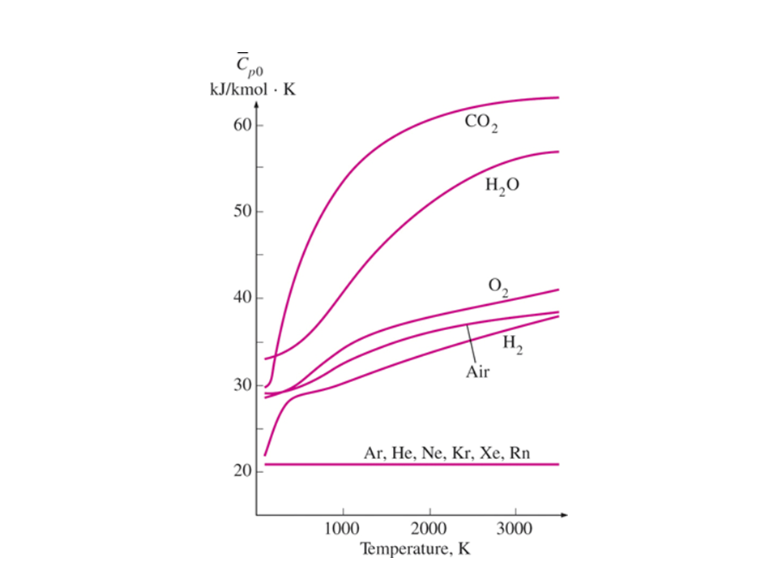
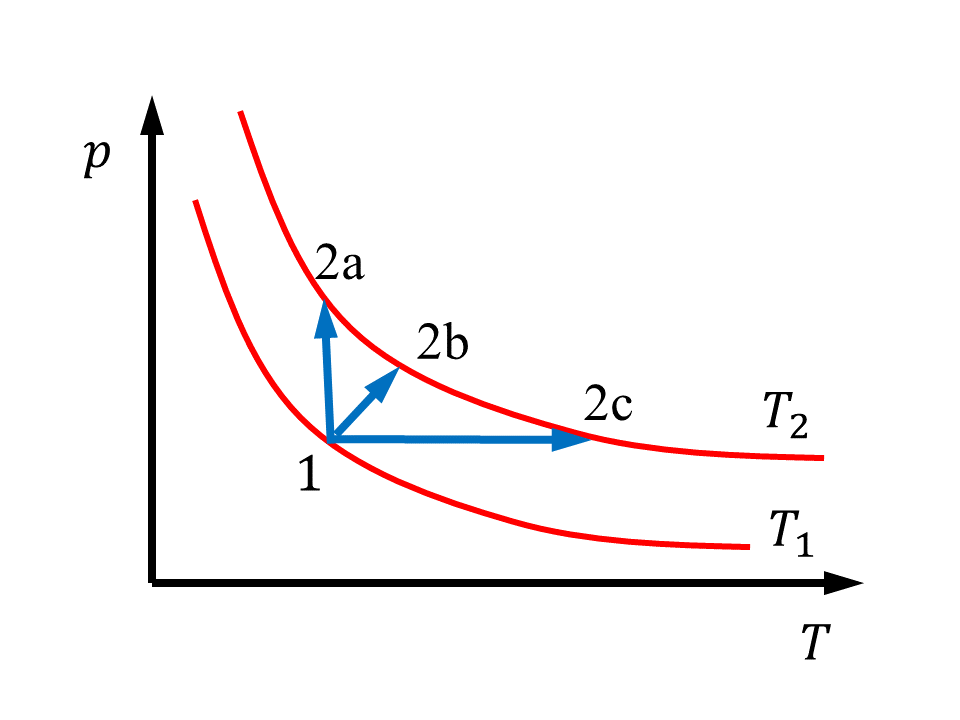
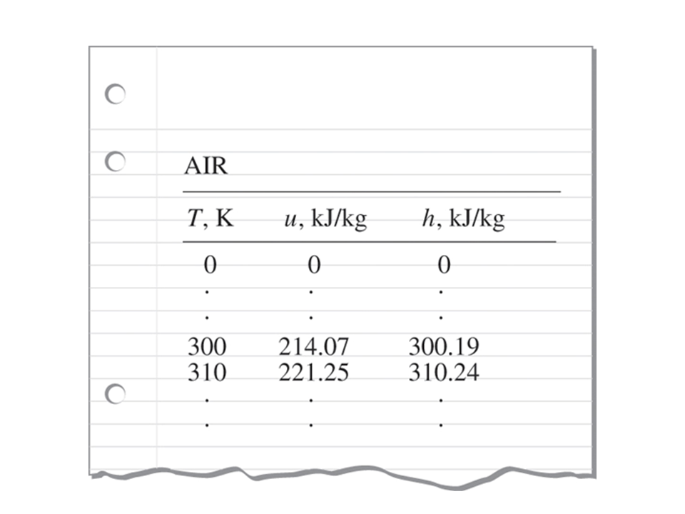
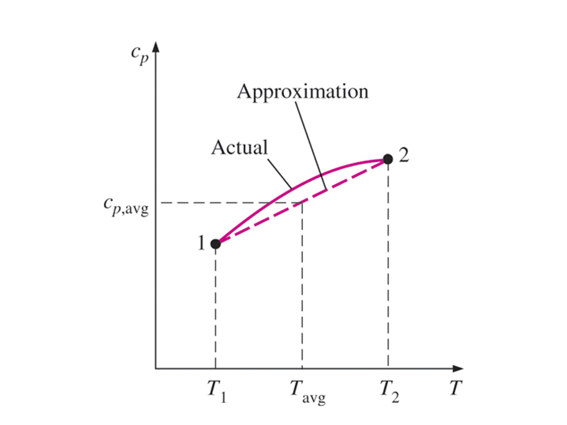

Revisa la Bibliografía recomendada en la sección Fuentes de Información del curso.
Notas para la clase.
Calores específicos, energía interna y entalpía
Antes de poder aplicar la primera ley de la termodinámica a los sistemas, se deben determinar formas de calcular el cambio en la energía interna de la sustancia encerrada por las fronteras del sistema. Para sustancias reales como el agua, las tablas de propiedades se utilizan para encontrar el cambio de energía interna. Para los gases ideales, la energía interna se encuentra conociendo los calores específicos. La física define la cantidad de energía necesaria para elevar un grado la temperatura de una unidad de masa de una sustancia como el calor específico a volumen constante, $c_V$, para un proceso a volumen constante y el calor específico a presión constante, $c_p$, para un proceso a presión constante. Recuerda que la entalpía específica, $h$, es la suma de la energía interna específica, $u$, y el producto presión-volumen específico, $p\;v$,
$$ h = u + p \; v $$En termodinámica, los calores específicos se definen como
$$ c_V = \left. \frac{\partial u}{\partial T} \right|_V \qquad \text{y} \qquad c_p = \left. \frac{\partial h}{\partial T} \right|_p $$Sustancia simple
El estado termodinámico de una sustancia simple y homogénea se especifica dando dos propiedades intensivas independientes cualesquiera, como se establece en el Postulado de estado. Consideremos que la energía interna es una función de $T$ y $v$ como $u = f(T,v)$, y la entalpía es una función de $T$ y $p$ como $h = g(T,p)$, entonces el diferencial total de $u$ es
$$ du = \left. \frac{\partial u}{\partial T} \right|_V d T + \left. \frac{\partial u}{\partial v} \right|_T d v $$o
$$ d u = c_V d T + \left. \frac{\partial u}{\partial v} \right|_T d v $$y el diferencial total de $h$ es
$$ d h = \left. \frac{\partial h}{\partial T} \right|_p d T + \left. \frac{\partial h}{\partial p} \right|_T d p $$o
$$ d h = c_p d T + \left. \frac{\partial h}{\partial p} \right|_T d p $$Usando la teoría de la relación termodinámica, podríamos evaluar las derivadas parciales restantes de $u$ y $h$ en términos de funciones de $p$, $v$ y $T$. Estas funciones dependen de la ecuación de estado de la sustancia. Dados los datos de calor específico y la ecuación de estado de la sustancia, podemos desarrollar las tablas de propiedades como las tablas de vapor.
Gases ideales
Para los gases ideales, usamos la teoría de la relación de funciones termodinámicas del Capítulo 11 de Cengel y la ecuación de estado ( $P v = R T$ ) para mostrar que $u$, $h$, $c_V y $c_p$ son funciones únicamente de la temperatura. Entonces para gases ideales,
$$ c_V = c_V (T) \qquad \text{con} \qquad \left. \frac{\partial u}{\partial v} \right|_T = 0 $$ $$ c_p = c_p (T) \qquad \text{con} \qquad \left. \frac{\partial h}{\partial p} \right|_T = 0 $$Los calores específicos de los gases ideales se escriben en términos de diferenciales ordinarios como
$$ c_V = \left. \frac{d u}{d T} \right|_{gas ideal} \qquad \text{y} \qquad c_p = \left. \frac{d h}{d T} \right|_{gas ideal} $$La figura siguiente muestra cómo los calores específicos varían con la temperatura para gases ideales seleccionados.

Los cambios diferenciales en energía interna y entalpía para gases ideales se vuelven
$$ d u = c_V \; d T \qquad \text{y} \qquad d h = c_p \; d T $$El cambio en la energía interna y la entalpía de los gases ideales se puede expresar como
$$ \Delta u = u_2 - u_1 = \int_1^2 c_V \; d T = c_{V,prom} (T_2 - T_1) $$y
$$ \Delta h = h_2 - h_1 = \int_1^2 c_p \; d T = c_{p,prom} (T_2 - T_1) $$donde $c_{V,prom}$ y $c_{p,prom}$,ave son valores promedio o constantes de los calores específicos en el rango de temperatura bajo estudio.

En la figura anterior, un gas ideal sufre tres procesos diferentes entre las mismas dos temperaturas.
Estos procesos de gas ideal tienen el mismo cambio en energía interna y en entalpía porque los procesos ocurren entre los mismos límites de temperatura.
Para encontrar $u$ y $h$, a menudo usamos valores promedio o constantes de los calores específicos. Algunas formas de determinar estos valores son las siguientes:
Echemos un segundo vistazo a la definición de $u$ y $h$ para gases ideales. Solo considera la entalpía por ahora.
$$ \Delta h = h_2 - h_1 = \int_1^2 c_p(T) \; d T $$Realicemos la integral relativa a un estado de referencia donde $h = h_\text{ref}$ en $T = T_\text{ref}$.
$$ \Delta h = h_2 - h_1 = \int_1^{ref} c_p(T') \; d T' + \int_{ref}^2 c_p(T') \; d T' $$o
$$ \Delta h = h_2 - h_1 = \int_{ref}^2 c_p(T') \; d T' - \int_{ref}^1 c_p(T') \; d T' = (h_2 - h_{ref}) - (h_1 - h_{ref}) $$A cualquier temperatura, podemos calcular la entalpía relativa al estado de referencia como
$$ h - h_{ref} = \int_{ref} c_p (T') d T' $$0
$$ h = h_{ref} + \int_{ref} c_p (T') d T' $$De manera similar, el cambio de energía interna en relación con el estado de referencia es
$$ u - u_{ref} = \int_{ref} c_V (T') d T' $$0
$$ u = u_{ref} + \int_{ref} c_V (T') d T' $$Estas dos últimas relaciones forman la base de las tablas termodinámicas para el aire (Tabla A-17 en base a la masa) y las otras tablas de gases ideales (Tablas A-18 a A-25 en base a moles). Cuando revise la Tabla A-17, encontrará $h$ y $u$ como funciones de $T$ en $\text{K}$. Dado que los parámetros $p_r$, $v_r$, etc., se aplican al aire en un proceso particular, llamado isentrópico, debe ignorar estos parámetros hasta que tengamos que estudiar el Capítulo 6 del Cengel. El estado de referencia para estas tablas se define como
$$ u_{ref} = 0 \quad \text{y} \quad h_{ref} = 0 \quad \text{para} \quad T_{ref} = 0 \text{ K}. $$

En el análisis que sigue, se elimina la notación prom. En la mayoría de las aplicaciones para gases ideales, los valores de los calores específicos a $300 \text{ K}$ que se dan en la Tabla A-2 son constantes adecuadas.
Relación entre $c_p$ y $c_V$ para gases ideales
Usando la definición de entalpía ( $h = u + P v$), y escribiendo el diferencial de entalpía, la relación entre los calores específicos para gases ideales es
$$ h = u + p V $$ $$ d h = d u +d (R T ) $$ $$ c_p d T = C_V d T + + R d T $$ $$ c_p = c_V + R $$donde $R$ es la constante particular de los gases. La relación de calor específico, $k$, se define como
$$ k = \frac{c_p}{c_V} $$Sólidos y Líquidos
Tratamos a los sólidos y líquidos como sustancias incompresibles. Es decir, suponemos que la densidad o volumen específico de la sustancia es esencialmente constante durante un proceso. Podemos demostrar que los calores específicos de sustancias incompresibles son idénticos (esto se puede ver en un capítulo posterior; por ejemplo, el capítulo 11 del Cengel).
$$ c_p = c_V = c \left[\frac{\text{kJ}}{\text{kg}\text{K}} \right] $$Los calores específicos de las sustancias incompresibles dependen únicamente de la temperatura; por lo tanto, escribimos el cambio diferencial en la energía interna como
$$ d u = c_V d T = c d T $$y suponiendo calores específicos constantes, el cambio en la energía interna es
$$ \Delta u = c_V \Delta T = c (T_2 - T_1) $$Ahora bien, recordando que la entalpía específica se define como
$$ h = u + p v $$Se tiene que el diferencial de entalpía es
$$ d h = d u + p d v + v d p $$Para sustancias incompresibles, la entalpía diferencial se convierte en
$$ d v = 0 $$ $$ d h = d u + p (0) + v d p $$ $$ d h = d u + v d p $$Integrando y asumiendo calores específicos constantes
$$ \Delta h = \Delta u + v \Delta p $$Para los sólidos, el volumen específico es aproximadamente cero; por lo tanto,
$$ \Delta h_{\text{sol}} = \Delta u_{\text{sol}} + {0} \Delta p $$ $$ \Delta h_{\text{sol}} = \Delta u_{\text{sol}} \approx c \delta T $$Para líquidos , se encuentran dos casos especiales:
Deduciremos esta última expresión para $h$ nuevamente una vez que hayamos analizado el sistema abierto de la primera ley y la segunda ley en un tema posterior (por ejemplo, Capítulo 6 del Cengel).
Los calores específicos para diferentes líquidos y sólidos seleccionados se dan en la tabla A-3.